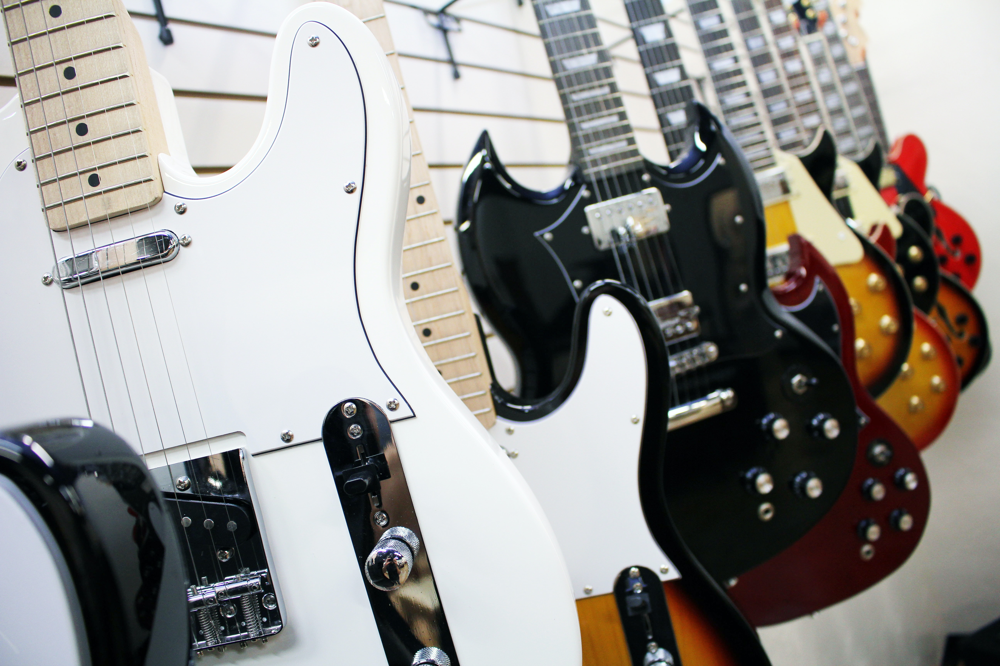

An electric guitar is a guitar that requires external amplification in order to be heard at typical performance volumes, unlike a standard acoustic guitar. It uses one or more pickups to convert the vibration of its strings into electrical signals, which ultimately are reproduced as sound by loudspeakers. The sound is sometimes shaped or electronically altered to achieve different timbres or tonal qualities from that of an acoustic guitar via amplifier settings or knobs on the guitar. Often, this is done through the use of effects such as reverb, distortion and "overdrive"; the latter is considered to be a key element of electric blues guitar music and jazz and rock guitar playing. Designs also exist combining attributes of the electric and acoustic guitars: the semi-acoustic and acoustic-electric guitars.
History
The "Frying Pan", 1932
Many experiments with electrically amplifying the vibrations of a string instrument were made dating back to the
early part of the 20th century. Patents from the 1910s show telephone transmitters were adapted and placed
inside
violins and banjos to amplify the sound. Hobbyists in the 1920s used carbon button microphones attached to the
bridge; however, these detected vibrations from the bridge on top of the instrument, resulting in a weak signal.
Electric guitars were originally designed by acoustic guitar makers and instrument manufacturers. The demand for
amplified guitars began during the big band era; as orchestras increased in size, guitar players soon realized
the
necessity in guitar amplification and electrification. The first electric guitars used in jazz were hollow
archtop acoustic guitar bodies with electromagnetic transducers.
The first electrically amplified stringed instrument to be marketed commercially was a cast aluminium lap steel
guitar nicknamed the "Frying Pan" designed in 1931 by George Beauchamp, the general manager of the National
Stringed
Instrument Corporation, with Paul Barth, who was vice president. George Beauchamp, along with Adolph
Rickenbacker, invented the electromagnetic pickups. Coils that were wrapped around a magnet would create an
electromagnetic field that converted the vibrations of the guitar strings into electrical signals, which could
then
be amplified.
Commercial production began in late summer of 1932 by the Ro-Pat-In Corporation (Electro-Patent-Instrument Company), in Los Angeles, a partnership of Beauchamp, Adolph Rickenbacker (originally Rickenbacher), and Paul Barth. In 1934, the company was renamed the Rickenbacker Electro Stringed Instrument Company. In that year Beauchamp applied for a United States patent for an Electrical Stringed Musical Instrument and the patent was later issued in 1937. By the time it was patented, other manufacturers were already making their own electric guitar designs. Early electric guitar manufacturers include Rickenbacker in 1932; Dobro in 1933; National, AudioVox and Volu-tone in 1934; Vega, Epiphone (Electrophone and Electar), and Gibson in 1935 and many others by 1936. Electro-Spanish by Ken Roberts, 1935 By early-mid 1935, Electro String Instrument Corporation had achieved success with the "Frying Pan", and set out to capture a new audience through its release of the Electro-Spanish Model B and the Electro-Spanish Ken Roberts, which was the first full 25-inch scale electric guitar ever produced. The Electro-Spanish Ken Roberts was revolutionary for its time, providing players a full 25-inch scale, with easy access to 17 frets free of the body.Unlike other lap-steel electrified instruments produced during the time, the Electro-Spanish Ken Roberts was designed to play while standing upright with the guitar on a strap, as with acoustic guitars. The Electro-Spanish Ken Roberts was also the first instrument to feature a hand-operated vibrato as a standard appointment, a device called the "Vibrola," invented by Doc Kauffman. It is estimated that fewer than 50 Electro-Spanish Ken Roberts were constructed between 1933 and 1937; fewer than 10 are known to survive today. The solid-body electric guitar is made of solid wood, without functionally resonating air spaces. The first solid-body Spanish standard guitar was offered by Vivi-Tone no later than 1934. This model featured a guitar-shaped body of a single sheet of plywood affixed to a wood frame. Another early, substantially solid Spanish electric guitar, called the Electro Spanish, was marketed by the Rickenbacker guitar company in 1935 and made of Bakelite.

By 1936, the Slingerland company introduced a wooden solid-body electric model, the Slingerland Songster 401 (and a lap steel counterpart, the Songster 400) Gibson's first production electric guitar, marketed in 1936, was the ES-150 model ("ES" for "Electric Spanish", and "150" reflecting the $150 price of the instrument, along with matching amplifier). The ES-150 guitar featured a single-coil, hexagonally shaped "bar" pickup, which was designed by Walt Fuller. It became known as the "Charlie Christian" pickup (named for the great jazz guitarist who was among the first to perform with the ES-150 guitar). The ES-150 achieved some popularity but suffered from unequal loudness across the six strings. A functioning solid-body electric guitar was designed and built in 1940 by Les Paul from an Epiphone acoustic archtop as an experiment. His "log guitar" — a wood post with a neck attached and two hollow-body halves attached to the sides for appearance only — shares nothing in common for design or hardware with the solid-body Gibson Les Paul, designed by Ted McCarty and introduced in 1952. The feedback associated with amplified hollow-bodied electric guitars was understood long before Paul's "log" was created in 1940; Gage Brewer's Ro-Pat-In of 1932 had a top so heavily reinforced that it essentially functioned as a solid-body instrument.